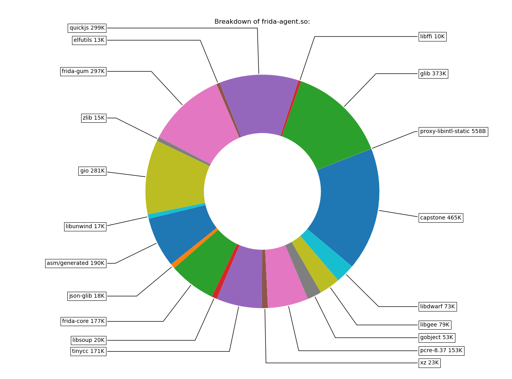
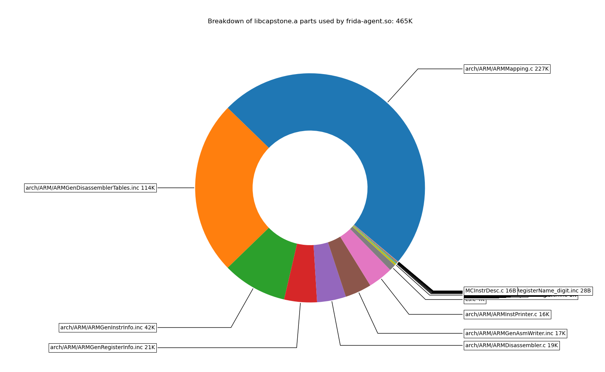
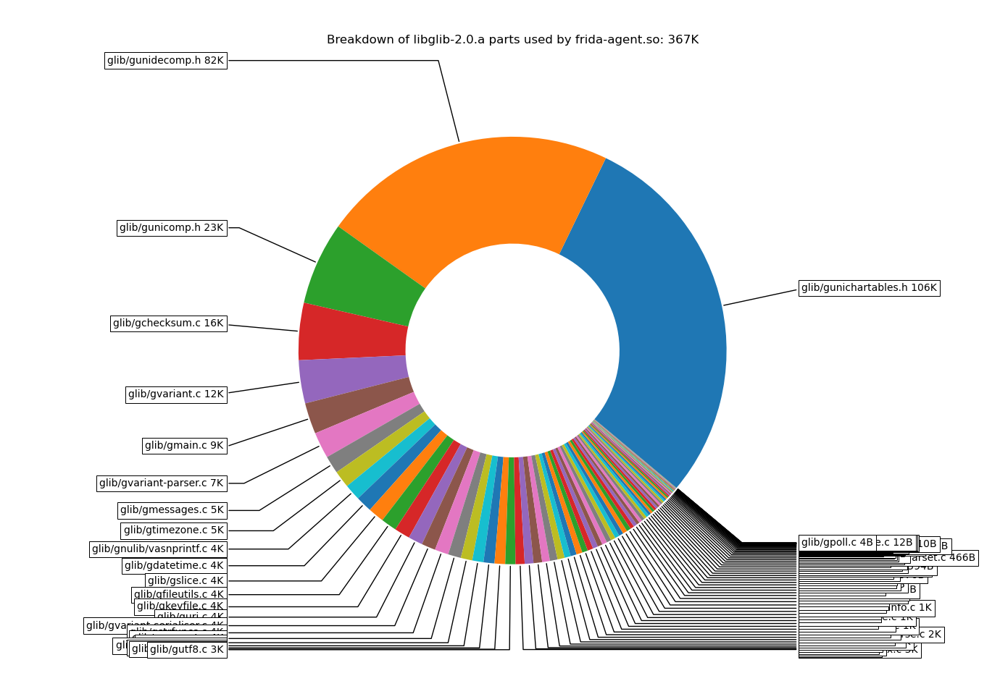
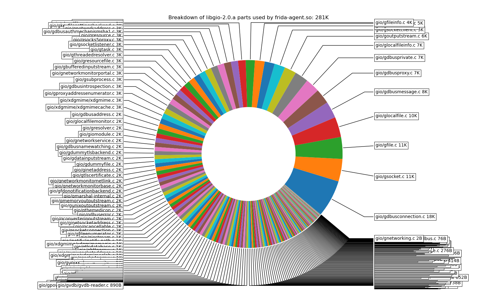

Footprint
We put a lot of effort into making sure that Frida can scale from desktops all the way down to embedded systems.
While our prebuilt binaries ship with all features enabled, building Frida
yourself means you can tailor it to your needs and build significantly smaller
binaries. The way this is done is by tweaking the available options in
config.mk:
# Features ordered by binary footprint, from largest to smallest
FRIDA_V8 ?= enabled
FRIDA_CONNECTIVITY ?= enabled
FRIDA_DATABASE ?= enabled
FRIDA_JAVA_BRIDGE ?= auto
FRIDA_OBJC_BRIDGE ?= auto
FRIDA_SWIFT_BRIDGE ?= autoIf working on embedded systems, all the aforementioned features may be disabled.
Specifically, they are only required in the following cases:
- FRIDA_V8: default Javascript runtime is QuickJS so it can safely disabled if
not used. Required if the V8 runtime is needed, for example when specifically
requested via the API
create_script(..., runtime='v8')or through the frida-tools CLI with--runtime=v8. - FRIDA_CONNECTIVITY: required if using certificates to enable TLS, or if using
setup_peer_connection()(API) or--p2p(CLI). Note that it is not required for network connectivity. For example, it is not required when using frida-server like this:frida-server -l 0.0.0.0. - FRIDA_DATABASE: required if using SqliteDatabase and related APIs, can be safely disabled if not.
- FRIDA_JAVA_BRIDGE: required when wanting to call or instrument Java APIs inside processes with a Java Virtual Machine or Android Runtime environment. Note that there are other languages apart from Java which run either on the JVM or the Android Runtime, such as Kotlin and Scala.
- FRIDA_OBJC_BRIDGE and FRIDA_SWIFT_BRIDGE: required when wanting to call or instrument Objective-C or Swift code. Useful on Apple OSes, like i/macOS, may be safely disabled outside the Apple ecosystem.
Let’s run through these and look at how the different options impact footprint size on Linux/armhf (32-bit ARM).
To make the following a bit clearer, we have added -Dassets=installed to the
frida-core Meson options. This means that frida-agent.so is not embedded into
the frida-server/frida-inject binary, but is instead loaded from the filesystem.
This is also what you typically want on embedded systems, as writing out the agent to /tmp is somewhat wasteful, whether it’s backed by flash or tmpfs.
All config.mk features enabled on linux-armhf
3.8M frida-inject
3.2M frida-server
15M frida-agent.so
15M frida-gadget.soStep 1: Disable V8
3.8M frida-inject
3.2M frida-server
5.2M frida-agent.so
5.3M frida-gadget.soAgent reduced by 9.8M.
Step 2: Disable connectivity features (TLS and ICE), eliminating OpenSSL
2.6M frida-inject
2.0M frida-server
3.6M frida-agent.so
3.7M frida-gadget.soAgent reduced by 1.6M.
Step 3: Disable the GumJS Database API, eliminating SQLite
2.6M frida-inject
2.0M frida-server
3.2M frida-agent.so
3.3M frida-gadget.soAgent reduced by 0.4M.
Step 4: Disable the GumJS bridges: ObjC, Swift, Java
2.6M frida-inject
2.0M frida-server
2.8M frida-agent.so
2.9M frida-gadget.soAgent reduced by 0.4M.
Let’s look at what we’re left with:

And to sate our curiosity, let’s have a closer look at three of the components that stand out:


